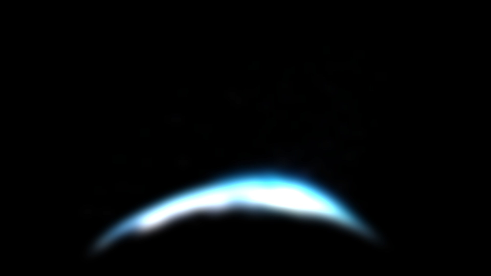
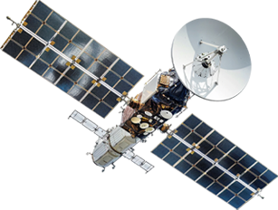
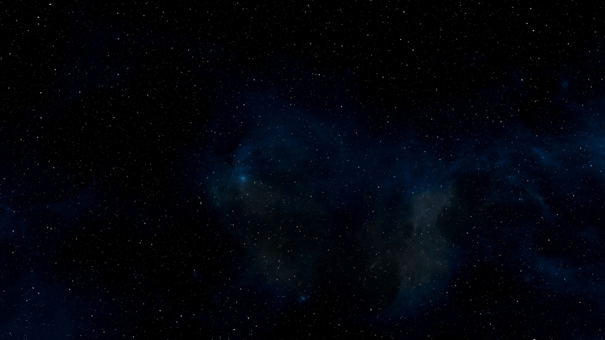
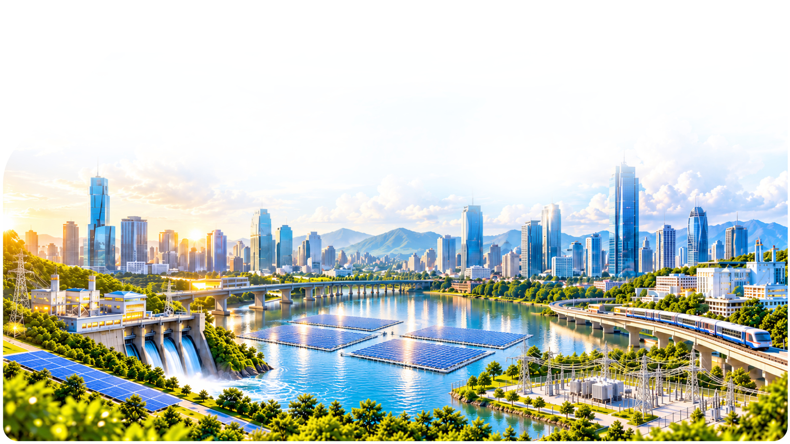
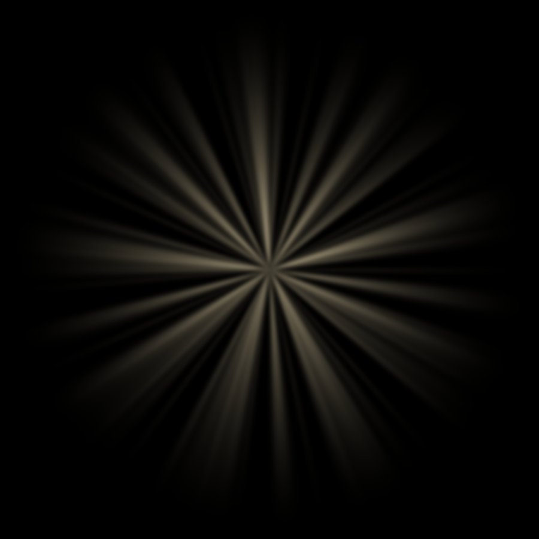
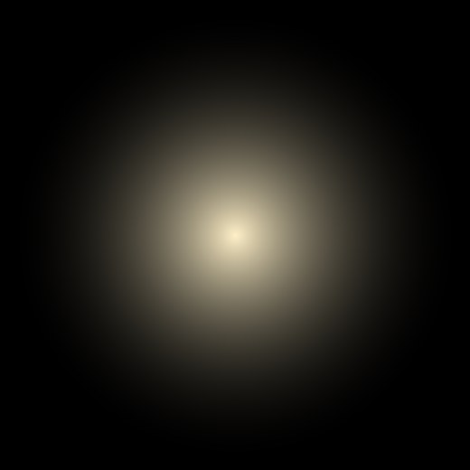

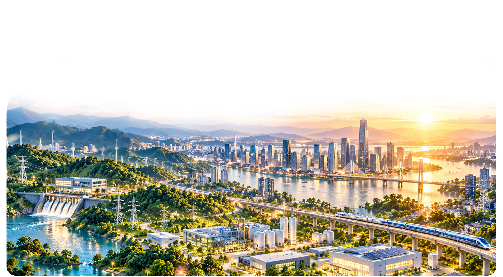
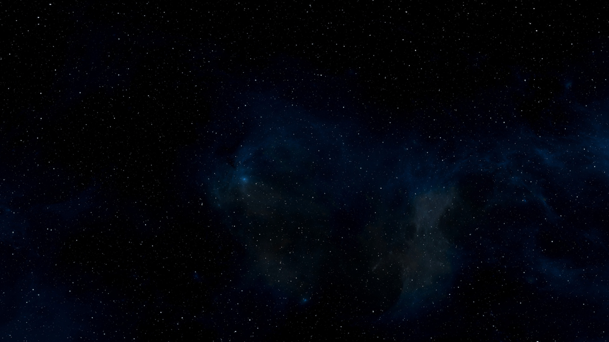
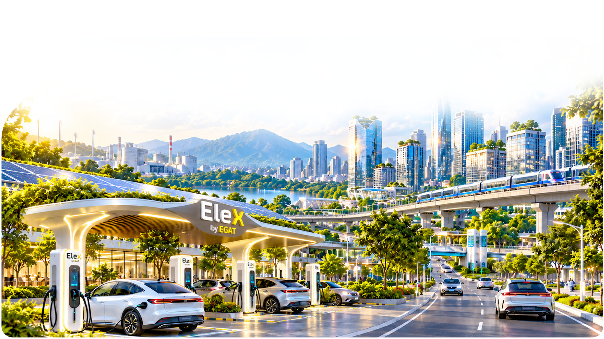
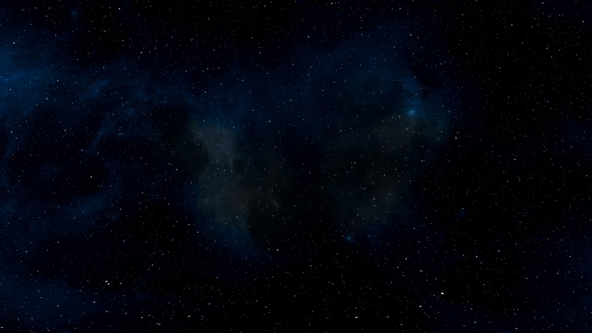
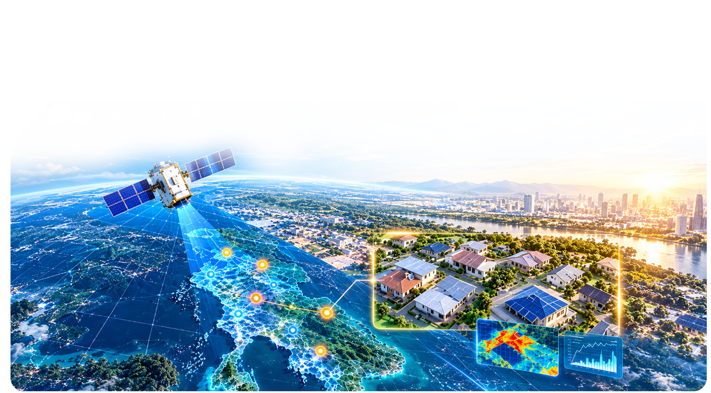
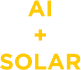
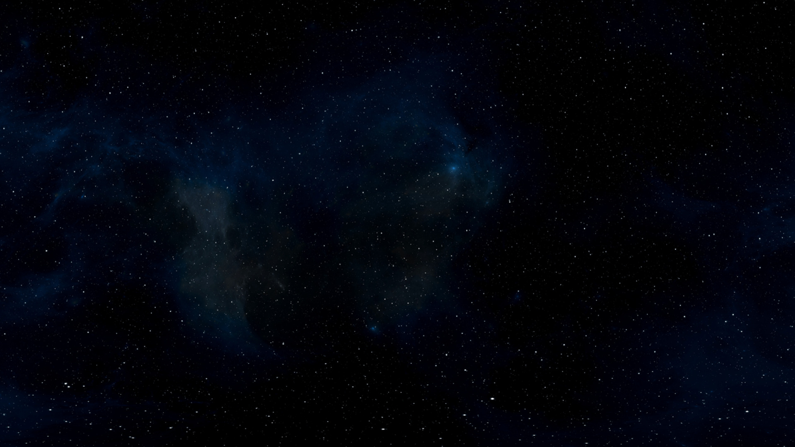
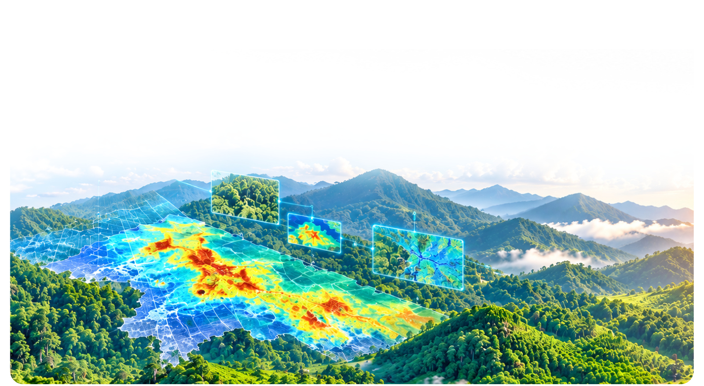
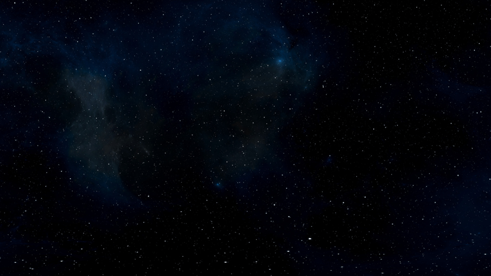
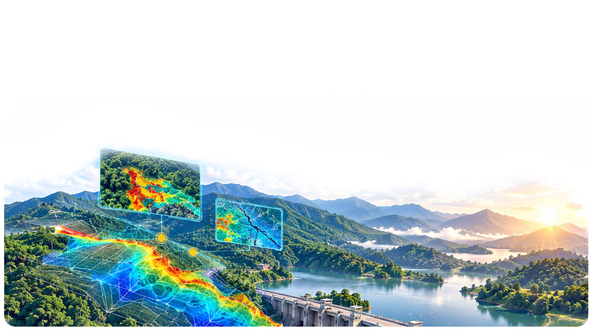
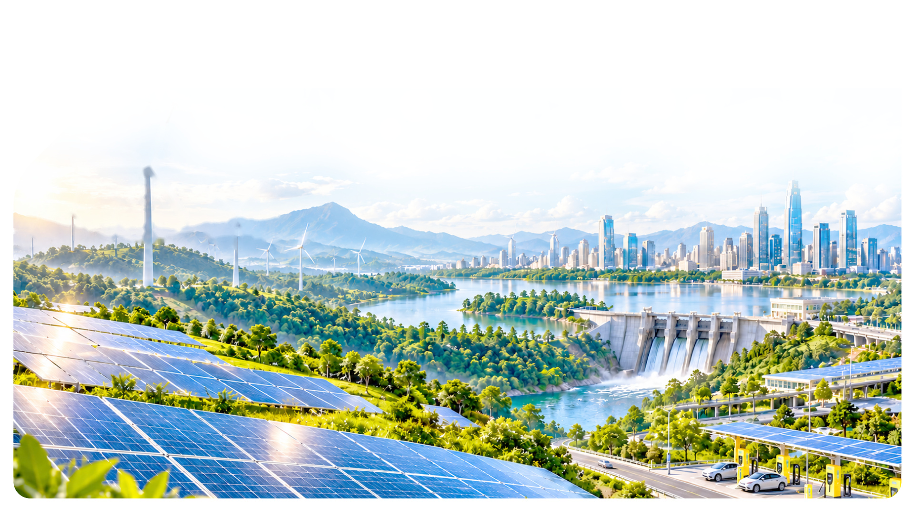
หน้านี้รอไฟล์ artwork — แตะปุ่ม Home เพื่อกลับ
EL
ตั้งค่า
สำหรับเจ้าหน้าที่ · ค่าที่ปรับจะจำไว้ในเครื่องนี้
ระดับเสียง
เวลารอ (ไม่มีคนแตะ)
นาที
นาที
EL
ออกจากโปรแกรม?
หน้าจอ kiosk จะถูกปิด
เบราว์เซอร์ไม่อนุญาตให้ปิดหน้าต่างนี้เอง — กด Alt+F4 (Windows) หรือ ⌘Q (Mac) เพื่อออก